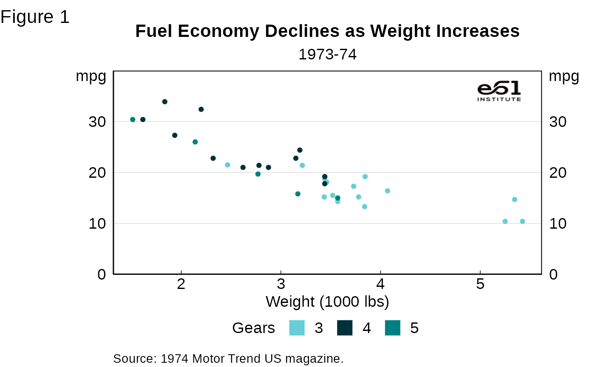
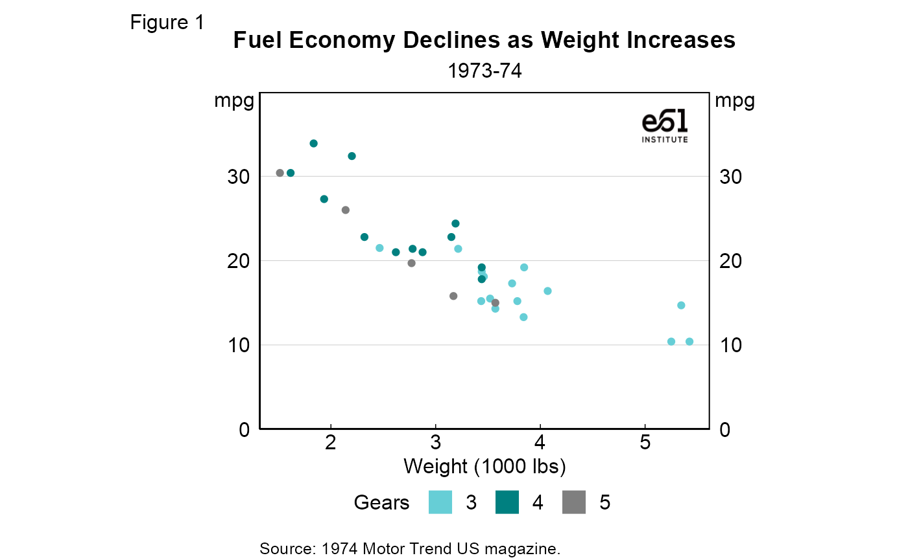
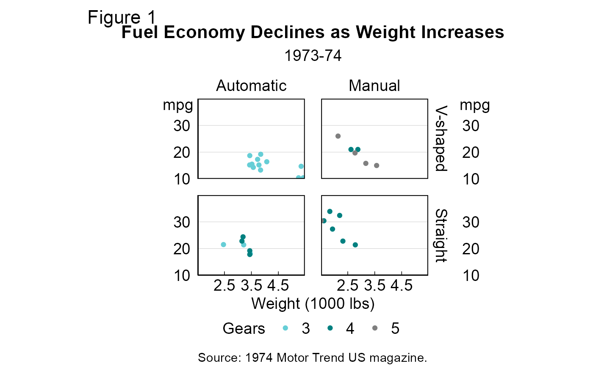
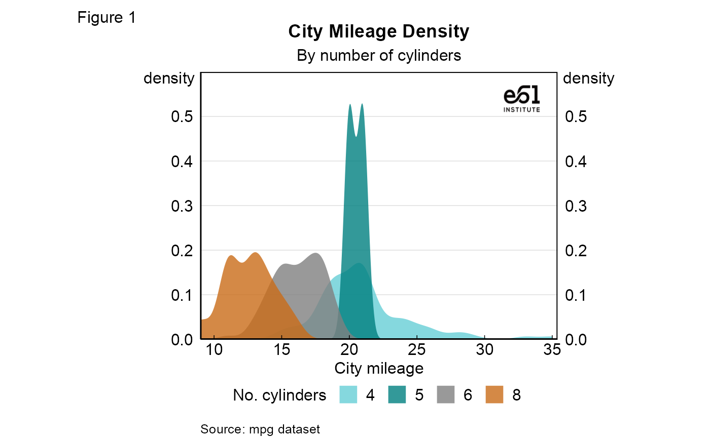
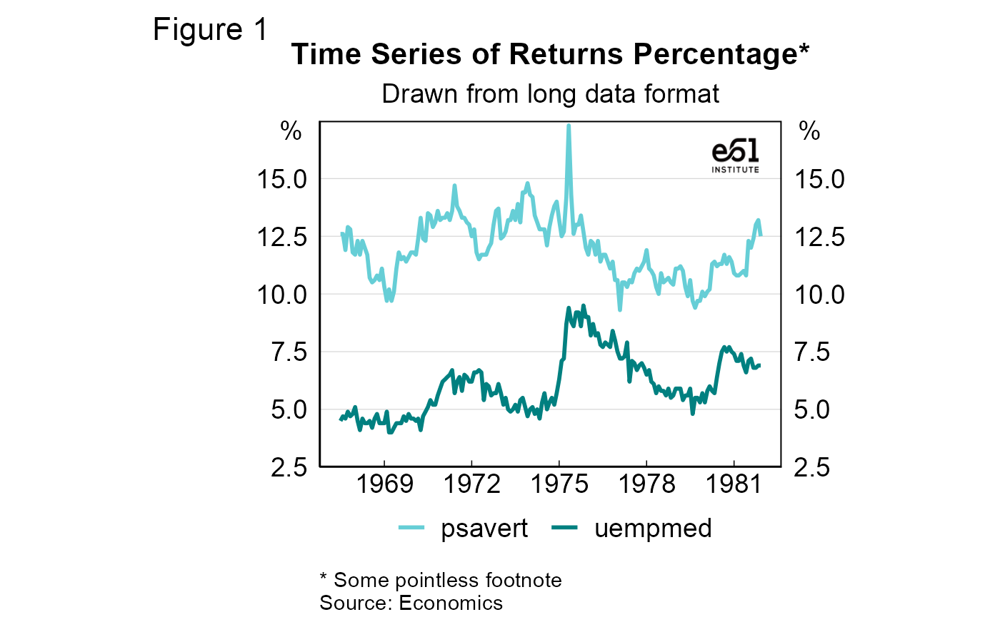

Introduction
theme61 acts as an extension to ggplot2. It is made up of a custom theme and a variety of functions that change the appearance of a standard ggplot2 graph. Thus, the correct usage of this package is to create your normal ggplot2 graph, then add theme61-specific elements. This article provides some examples to help you figure out what elements you can change. Refer to these examples and the function reference page to see the full scope of this package.
Graph examples
Scatter graph
# Set up data
mtcars2 <- within(mtcars, {
vs <- factor(vs, labels = c("V-shaped", "Straight"))
am <- factor(am, labels = c("Automatic", "Manual"))
cyl <- factor(cyl)
gear <- factor(gear)
})
# Graph
p1 <- ggplot(mtcars2) +
geom_point(aes(x = wt, y = mpg, colour = gear)) +
e61_labs(
title = "Fuel Economy Declines as Weight Increases",
subtitle = "1973-74",
sources = "1974 Motor Trend US magazine.",
tag = "Figure 1",
x = "Weight (1000 lbs)",
y = "mpg",
colour = "Gears"
)
p1 +
theme_e61(legend = "bottom", legend_title = TRUE) +
scale_y_continuous_e61(limits = c(0, 40)) +
e61_colour_manual(n = 3) +
add_e61_logo() +
e61_y_title_top(-16) +
square_legend_symbols()
Faceted scatter graph
p1 +
facet_grid(vs ~ am) +
theme_e61(panel_borders = TRUE, legend = "bottom", legend_title = TRUE) +
e61_y_title_top() +
e61_colour_manual(n = 3) +
scale_y_continuous_e61(limits = c(10, 40)) +
scale_x_continuous_e61()
Density graph
g <- ggplot(mpg, aes(cty))
g + geom_density(aes(fill = factor(cyl)), linetype = "blank", alpha = 0.8) +
e61_labs(
title = "City Mileage Density",
subtitle = "By number of cylinders",
sources = "mpg dataset",
x = "City mileage",
tag = "Figure 1",
y = "density",
fill = "No. cylinders"
) +
theme_e61(legend = "bottom", legend_title = TRUE) +
scale_y_continuous_e61(limits = c(0, 0.6)) +
scale_x_continuous_e61() +
e61_y_title_top(-18) +
e61_fill_manual(n = 4) +
e61_colour_manual(n = 4) +
add_e61_logo()
Line graph
df <- economics_long[economics_long$variable %in% c("psavert", "uempmed"), ]
df <- df[lubridate::year(df$date) %in% c(1967:1981), ]
# labels and breaks for X axis text
brks <- df$date[seq(1, length(df$date), 12)]
lbls <- lubridate::year(brks)
# plot
ggplot(df, aes(x = date)) +
geom_line(aes(y = value, colour = variable), size = 1) +
e61_labs(
title = "Time Series of Returns Percentage*",
subtitle = "Drawn from long data format",
footnotes = "Some pointless footnote",
sources = "Economics",
tag = "Figure 1",
x = NULL, y = "%",
colour = NULL
) +
scale_x_date(date_breaks = "3 years", date_labels = "%Y") +
scale_y_continuous_e61(limits = c(2.5, 17.5), breaks = seq(2.5, 15, 2.5)) +
theme_e61(legend = "bottom") +
e61_y_title_top(-25) +
e61_colour_manual(n = 2,
labels = c("Market Returns", "Unemployment")) +
add_e61_logo() +
square_legend_symbols()
Column graph
col_data <- head(mtcars2, 8)
col_data$names <- rownames(col_data)
col_data$index <- 1:nrow(col_data)
ggplot(col_data, aes(x = index, y = hp, fill = hp)) +
geom_col() +
e61_labs(
title = "Frivolous Filled Column Chart",
subtitle = "For the purpose of showing off the continuous colour palette",
sources = c("e61 Institute", "Another source"),
x = NULL, y = "hp") +
scale_y_continuous_e61(limits = c(0, 250)) +
theme_e61(legend = "bottom") +
e61_y_title_top(-23, fix_left = 5) +
e61_fill_manual(discrete = FALSE, palette = "light")